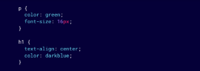

INDEX
Torna a l'index principal
Introducció al CSS
Què es el CSS?
CSS (Cascading Style Sheets) és un llenguatge de fulles d’estil que s’utilitza per controlar la presentació i el disseny dels documents web escrits en HTML. Mentre que HTML proporciona l’estructura del contingut, CSS defineix com s’ha de visualitzar aquest contingut en termes de disseny, colors, tipografia, espaiat i posicionament dels elements en una pàgina.
Importància del CSS en el desenvolupament web
El CSS és una peça fonamental del desenvolupament web, ja que permet separar la presentació visual del contingut estructural d'una pàgina. Això ofereix una sèrie d'avantatges: Disseny i estètica millorats: Amb CSS, pots aplicar estils atractius i professionals a les pàgines web, fent-les visualment atractives i més fàcils de llegir i navegar. Separació de contingut i estil: Gràcies al CSS, és possible mantenir els estils de presentació (com colors, mides de text, marges) fora del codi HTML, el que facilita el manteniment i l'actualització del disseny sense afectar l'estructura del contingut. Facilitat de manteniment: Amb un sol fitxer CSS, pots aplicar estils a múltiples pàgines web, estalviant temps i esforç quan es fan canvis de disseny. Això permet una actualització i un manteniment molt més eficient. Millor experiència d'usuari: Amb el CSS es poden crear dissenys adaptables (responsive) que funcionen bé en diferents dispositius, com mòbils, tauletes i ordinadors de sobretaula. Aquest tipus de disseny millora significativament l’experiència de l’usuari. Rendiment i velocitat: Utilitzar fitxers CSS externs pot ajudar a carregar les pàgines web més ràpidament, ja que els navegadors poden emmagatzemar en memòria cau aquests fitxers i reutilitzar-los en diverses pàgines, estalviant ample de banda i temps de càrrega.
Aplicació d'estils
Estils en línia (Inline styles)
Els estils en línia s'apliquen directament a un element HTML, utilitzant l'atribut style dins de la mateixa etiqueta de l'element. Aquest mètode és adequat per a aplicar estils a un sol element de manera ràpida, però no és recomanable per a pàgines grans, ja que dificulta la mantenibilitat.
Exemple:
<p style="color: red; font-size: 20px;" >
Aquest és un paràgraf amb estils en línia.
Estils incrustats (Embedded styles)
Els estils incrustats es col·loquen dins de la secció <head> d’un document HTML, dins d’una etiqueta <style>. Aquests estils s'apliquen a tots els elements HTML de la pàgina actual.
Avantatges: Més eficient que els estils en línia, ja que es poden aplicar estils a diversos elements d'una mateixa pàgina des d'un sol lloc.
Inconvenients: Només afecta la pàgina on s’aplica, no es reutilitza entre diverses pàgines. Si la pàgina creix massa, pot fer més difícil la lectura i manteniment.
Exemple:
<style>p {
color: blue;
font-size: 18px;
}
h1 {
text-align: center;
}
</style>
Estils externs (External stylesheets)
Els estils externs s’emmagatzemen en un fitxer CSS separat, i s’enllacen al document HTML utilitzant l'etiqueta <link> dins de la secció <head>. Aquest és el mètode més recomanat per a la majoria de llocs webs, especialment si consten de múltiples pàgines.
Sintaxi básica del CSS
1. Regla CSS
Es una instrucció que defineix com
s'ha d'aplicar un estil a un o més elements HTML
dins d'una pàgina web.
2. Selector:
Indica l'element HTML al qual
s'aplicaran els estils.
3. Propietat:
Defineix la característica que vols
modificar (com ara el color, la mida del text, el
marge, etc.).
4. Valor:
Assigna un valor específic a la propietat
(com ara "blau" per al color, "16px" per a la mida
del text, etc.).
5. Declaració CSS:
Es una instrucció dins d'una regla
CSS que defineix una característica específica d'estil
per a un element HTML.
Selectors en CSS
Selector de tipus (Type Selector)
Aquest selector aplica estils a tots els elements HTML del mateix tipus. Aquest codi aplicarà el color verd a tots els títols (<h1>) de la pàgina.
h1 {
color: green;
}
Selector de classe (Class Selector)
Els selectors de classe permeten aplicar estils a elements HTML amb una classe específica. S’utilitza un punt (.) per seleccionar una classe. Qualsevol element HTML que tingui l'atribut class="mi- classe" tindrà un fons groc. Per exemple:
.mi-classe {
background-color: yellow;
}
Selector d'id (ID Selector)
El selector d’id s’utilitza per aplicar estils a un únic element HTML que tingui un identificador específic. Es fa servir el símbol de la coixinera #. Aquest exemple centrarà el text de l’element que tingui id="mi-id". És important recordar que un ID ha de ser únic a la pàgina.
#mi-id {
text-align: center;
}
Selector universal
El selector universal (*) aplica estils a tots els elements d’una pàgina. Aquest exemple elimina els marges i farcits de tots els elements de la pàgina, cosa útil per establir un estil uniforme.
<p>* {
margin: 0;
padding: 0;
}
Conceptes importants
Herència
Els fills hereten els estils dels seus pares, així no cal que escriguis estils per a tot.
Especifitat
Quan hi ha conflictes d'estils, el navegador aplica només el de més especificitat.
Cascada
Tot estil sobreescriu un d'anterior. La C de CSS significa Cascada.
Propietats de text i fonts
Propietat font-family
La propietat font-family defineix el tipus de lletra (tipografia) que s'utilitzarà per a un element de text. Pots especificar una o més fonts, i el navegador aplicarà la primera que estigui disponible al sistema de l'usuari.
Propietat font-size
La propietat font-size controla la mida de la lletra. Els valors es poden definir en diverses unitats, com píxels (px), ems (em), punts (pt), o percentatges (%).
Propietat color
La propietat color defineix el color del text. Es poden utilitzar noms de colors predefinits, valors en hexadecimal, o el sistema de colors RGB o RGBA.
Propietat text-align
La propietat text-align s'utilitza per controlar l'alineació del text dins d'un element. Els valors més comuns són left (esquerra), right (dreta), center (centrat) i justify (justificat).
Propietat font-weight
La propietat font-weight controla el gruix de la lletra. Els valors comuns són:
normal: per defecte.
bold: text en negreta.
Números entre 100 i 900, on 400 és el valor per defecte i 700 representa
negreta.
Propietat font-style
La propietat font-style controla l'estil de la font, com si el text serà normal o en
cursiva.
Els valors més comuns són:
normal: Text normal.
italic: Text en cursiva.
oblique: Text inclinat.
Màrges, farcits i vores en CSS
Marges (margin)
Marges (margin) La propietat margin controla l'espai exterior d'un element, és a dir, l'espai que hi ha entre un element i els altres elements que l’envolten. Els marges es poden definir de manera individual per a cadascun dels quatre costats de l'element (superior, dret, inferior, esquerre) o de manera global per a tots els costats alhora.
margin-top: 20px; /* Marge superior de 20 píxels */
margin-bottom: 10px; /* Marge inferior de 10 píxels */
margin-left: 10px; /* Marge esquerra de 10 píxels */
margin-right: 10px; /* Marge dret de 10 píxels */
margin: 10px; /* Aplica un marge de 10 píxels a tots els costats */
Farcits (Padding)
La propietat padding controla l'espai interior d'un element, és a dir, l'espai entre el contingut d'un element (com text o imatges) i les seves vores. Igual que amb els marges, els farcits es poden definir per a tots els costats o per a cadascun individualment.
padding: 20px; /* Aplica un farcit de 20 píxels a tots els costats */
padding-left: 15px; /* Aplica un farcit de 15 píxels al costat esquerre */
Bores (Border)
La propietat border s'utilitza per afegir una vora al voltant
d'un element. Aquesta propietat té diversos subatributs:
Amplada de la vora (border-width): defineix el gruix de
la vora.
Estil de la vora (border-style): pot ser solid (sòlid),
dashed (ratllat), dotted (puntets), etc.
color de la vora (border-color): especifica el color de la
vora.
Unitats comunes
Píxels (px):
Unitat fixa, representa un punt a la pantalla.
Exemple: margin: 20px;
Ems (em):
Unitat relativa a la mida de la font de l'element pare.Exemple: padding: 2em; (2 vegades la mida de la font).
Rems (rem):
Unitat relativa a la mida de la font de l'element arrel (html).Exemple: margin: 1.5rem; (1.5 vegades la mida de la font arrel).
Percentatge (%):
Relativa a l'amplada o alçada del contenidor pare.Exemple: padding: 5%; (5% de l'amplada del contenidor).
Viewports (vw, vh):
Relativa a la mida de la finestra visible.Exemple: margin: 5vw; (5% de l'amplada del viewport).
Vores (border-width):
Gruixos predeterminats: thin, medium, thick o valors com px.Exemple: border: thick solid black;
Colors i fons en CSS
Propietat color
La propietat color s’utilitza per canviar el color del text dins d’un
element.
Pots definir els colors de diverses maneres:
Noms de colors: utilitzar noms predefinits com red, blue,
green, etc.
Colors hexadecimals: utilitzar un codi hexadecimal que
comença amb # seguit de sis caràcters (exemple: #FF0000
per a vermell).
RGB: utilitzar valors de rgb() on cada component (vermell,
verd, blau) s’especifica entre 0 i 255.
RGBA: igual que rgb(), però amb un quart valor per a l'opacitat
(valors entre 0.0 i 1.0).
Propietat background-color
La propietat background-color s’utilitza per establir el color de fons d’un element. Igual que la propietat color, pots definir colors utilitzant noms, valors hexadecimals, RGB o RGBA.
Propietat background
La propietat background és una manera abreujada d’especificar diverses propietats de fons alhora, com el color, la imatge de fons, la repetició, la posició, etc.
Propietat background-image
Aquesta propietat permet afegir una imatge com a fons d'un
element.
Pots especificar la ubicació de la imatge amb una URL.
Si vols que la imatge es repeteixi o es mostri d'una altra manera,
pots utilitzar altres propietats complementàries:
background-repeat: Controla si la imatge de fons es repeteix.
Els valors poden ser repeat, no-repeat, repeat-x
(horitzontalment) o repeat-y (verticalment).
background-position: Defineix la posició de la imatge de fons
(per exemple, center, top, left).
background-size: Permet ajustar la mida de la imatge (per
exemple, cover o contain per adaptar-se a la mida de
l'element).
Dimensions i caixes en CSS
El CSS utilitza el model de caixa per representar els elements d'una pàgina web. Cada element es considera com una
caixa rectangular que conté el contingut, farcits, marges i vores. És important entendre aquest model perquè
controla com es distribueixen i s'ajusten els elements dins de la pàgina.
El model de caixa es compon de quatre parts principals:
Contingut: El contingut real de l'element, com text, imatges o altres elements.
Farcit (padding): L'espai entre el contingut i la vora.
Vora (border): El límit al voltant del farcit.
Marge (margin): L'espai extern entre la vora i altres elements.
Propietats
Propietats de dimensions (width i height)
Les propietats width (amplada) i height (alçada) s’utilitzen per definir la mida d’un element. Aquests valors es poden definir en unitats fixes com píxels (px) o unitats relatives com percentatges (%), que depenen de la mida del seu element contenidor.
El model de caixa en CSS
El model de caixa estableix com es calculen les dimensions d'un element tenint en compte les propietats de marges, farcits, i vores. Per defecte, la mida de width i height només afecta el contingut. Per incloure el farcit i la vora dins de les dimensions de l'element, es pot utilitzar la propietat box-sizing.
Propietat box-sizing
La propietat box-sizing controla com es calculen les dimensions totals de l’element. Hi ha dues opcions principals: content-box (valor per defecte): Només inclou el contingut en les dimensions, mentre que les vores i els farcits s'afegeixen a part. border-box: Inclou el contingut, el farcit i la vora dins de les dimensions especificades.
Control del desbordament (overflow)
Quan el contingut d'un element és més gran que les dimensions especificades, el CSS ofereix la propietat overflow per controlar com es mostra el contingut que desborda.
Els valors més comuns són: visible: El contingut que desborda es mostra fora de l’element (valor per defecte). hidden: El contingut que desborda es retalla i no es mostra. scroll: Mostra barres de desplaçament, encara que el contingut no desbordi. auto: Mostra barres de desplaçament només si el contingut desborda.

Posicionament bàsic en CSS
La propietat position
La propietat position permet especificar el mètode de posicionament d’un element. Els valors més comuns són:
static (per defecte): Els elements es posicionen de manera normal, seguint el flux del document. No es pot ajustar manualment amb
coordenades.
relative: Es posiciona l'element respecte a la seva posició original en el flux del document. Es poden utilitzar coordenades per moure’l
lleugerament (dalt, baix, esquerra o dreta).
absolute: L'element es treu del flux del document i es posiciona respecte al seu element contenidor més proper que tingui una posició
definida. Si no hi ha cap contenidor definit, es posiciona respecte a la pàgina.
fixed: L'element es treu del flux del document i es posiciona respecte a la finestra del navegador. Es manté fix fins i tot quan l'usuari fa
desplaçaments.
sticky: L'element es comporta com relative fins que arriba a un punt en el desplaçament de la pàgina, després del qual es comporta
com fixed.
Propietats de posicionament (top, right, bottom, left)
Quan es defineix la propietat position com relative, absolute, fixed o sticky, pots utilitzar les propietats top, right, bottom, i left per especificar la distància de l'element respecte als seus límits.
Posicionament absolut (position: absolute)
Amb position: absolute, l'element es treu completament del flux normal del document i es posiciona respecte al seu element contenidor més proper amb position: relative, absolute, o fixed.
Posicionament fix (position: fixed)
Els elements amb position: fixed es mantenen en una ubicació fixa a la pantalla fins i tot quan l'usuari fa desplaçaments. Es posicionen respecte a la finestra del navegador.
Posicionament enganxós (position: sticky)
Els elements amb position: sticky es comporten com relative fins que l'usuari es desplaça per la pàgina i arriba a un punt especificat, després del qual l'element es comporta com fixed.
Propietat z-index
La propietat z-index es fa servir per controlar l'ordre de superposició dels elements posicionats (relative, absolute, fixed o sticky). Els valors més alts de z-index col·loquen l'element davant d'altres elements amb valors inferiors.
Disseny bàsic amb Flexbox
Flexbox és un sistema de disseny en CSS que proporciona una manera molt eficient de distribuir l'espai entre els elements i alinear-los dins d'un contenidor, fins i tot quan la mida dels elements és desconeguda o dinàmica. Flexbox és ideal per crear dissenys de pàgines adaptatives, ja que facilita l'alineació, distribució i ordenació dels elements dins d'un contenidor.
El contenidor flex (display: flex)
El punt de partida per utilitzar Flexbox és establir display: flex en l'element contenidor. Aquest contenidor es coneix com a contenidor flex, i els seus elements fills es coneixen com a elements flex. Un cop activat el display: flex, pots utilitzar diverses propietats per ajustar com es distribueixen els elements dins del contenidor.
Direcció del flux (flex-direction)
Per defecte, els elements flex es disposen en fila horitzontalment.
Potscanviar la direcció amb la propietat flex-direction.
Els valors més comuns són:
row: Els elements es col·loquen en fila (horitzontal) (valor per
defecte).
row-reverse: Els elements es col·loquen en fila però en ordre
invers.
column: Els elements es col·loquen en columna (vertical).
column-reverse: Els elements es col·loquen en columna però en
ordre invers.
Alineació horitzontal (justify-content)
La propietat justify-content controla l'alineació dels elements al llarg de
l'eix principal (horitzontal per defecte). Pots distribuir els elements flex de
diferents maneres dins del contenidor.
Els valors més comuns són:
flex-start: Els elements s'alineen al començament del contenidor.
flex-end: Els elements s'alineen al final del contenidor.
center: Els elements es centren dins del contenidor.
space-between: Es distribueixen uniformement amb espai entre ells.
space-around: Els elements tenen espai al voltant de cadascun.
Alineació vertical (align-items)
La propietat align-items controla l'alineació dels elements al llarg de l'eix
transversal (vertical si la direcció és horitzontal). Aquesta propietat
determina com s'alineen els elements flex dins del contenidor en relació
amb la seva alçada.
Els valors més comuns són:
stretch: Els elements s'estiren per omplir el contenidor (valor per
defecte).
flex-start: Els elements s'alineen a la part superior del contenidor.
flex-end: Els elements s'alineen a la part inferior del contenidor.
center: Els elements es centren verticalment dins del contenidor.
baseline: Els elements s'alineen segons la seva línia de base de text.
Control de l'espai que ocupa cada element (flex-grow)
La propietat flex-grow especifica com els elements flex creixen dins del contenidor per ocupar l'espai disponible. Cada element es pot assignar un valor numèric que indica quant ha de créixer en relació amb els altres elements. Si tots els elements tenen flex-grow: 1, l'espai disponible es distribuirà de manera uniforme.
Media Queries (Introducció)
Què són les Media Queries?
Una media query és una condició que s'afegeix al CSS per aplicar regles d'estil només quan es compleixin certes característiques del dispositiu o de la finestra del navegador. L'exemple més comú és aplicar estils diferents en funció de l'amplada de la pantalla.
Aplicació bàsica de Media Queries per a pantalles de diferent mida
Un ús típic de les media queries és adaptar el disseny a diferents amplades de pantalla. Per exemple, pots ajustar els estils per a pantalles grans i petites.
Tipus de condicions més comunes en les Media Queries
Amplada de la pantalla (min-width i max-width) Aquestes condicions s'utilitzen per aplicar estils quan la finestra del navegador té una amplada mínima (min-width) o màxima (max-width).
Altura de la pantalla (min-height i max-height) Aquestes condicions funcionen de manera similar a les d'amplada, però es basen en l'altura de la finestra.
Orientació de la pantalla (orientation) Pots utilitzar la condició orientation per aplicar estils diferents si la pantalla està en orientació horitzontal (landscape) o vertical (portrait).